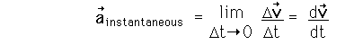

Acceleration Acceleration is defined as the rate of change of velocity. Acceleration is inherently a vector quantity, and an object will have non-zero acceleration if its speed and/or direction is changing. The average acceleration is given by The units for acceleration can be implied from the definition to be meters/second divided by seconds, usually written m/s2. The instantaneous acceleration at any time may be obtained by taking the limit of the average acceleration as the time interval approaches zero. This is the derivative of the velocity with respect to time: 
|
Index | ||
|
Go Back |